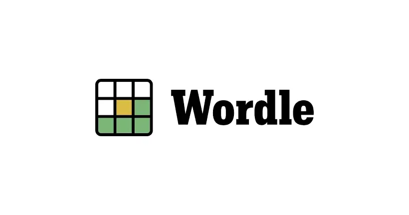
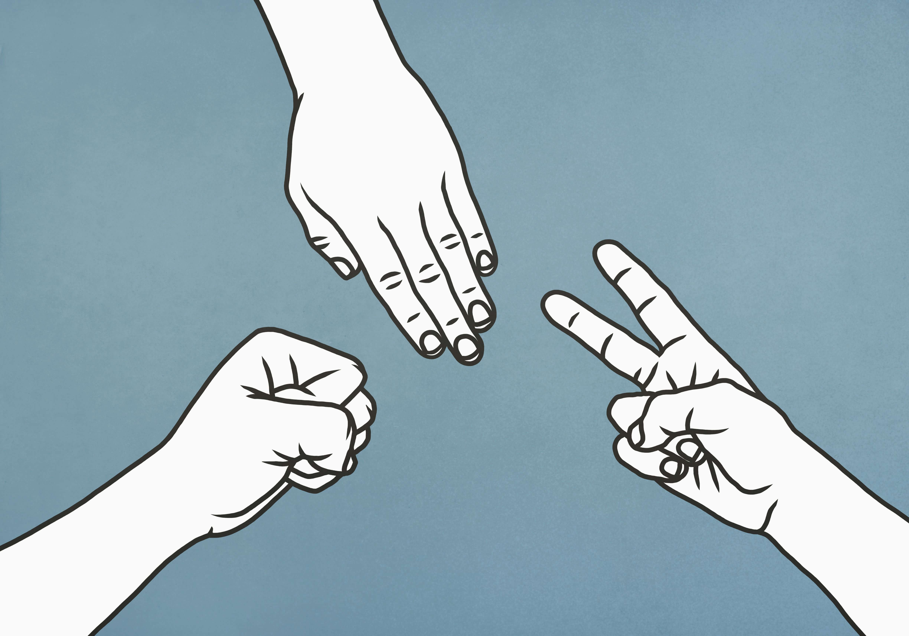
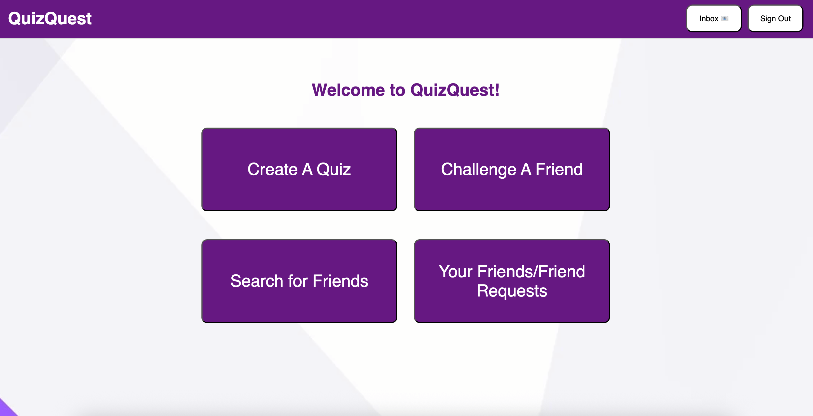

Terminal Based Wordle
Feb 2023 - Apr 2023

In my advanced programming class, we created a Wordle clone in C++ for our projects. Requirements were not only the game logic, but also menus, statistics, and the keyboard viewer.
Terminal Based Rock Paper Scissors
May 2023

Designed a simple Rock Paper Scissors game as a personal practice project in Python. The game utilizes a best-of-3 game mode against an AI opponent and colored terminal output using ANSI escape codes.
Quiz Web App
Apr 2025 - May 2025

Worked in a group of four to create a quiz web app for our Full Stack Web Development class. This app allows users to create quizzes, send friend requests to other users, and challenge those friends to a quiz of their choice.